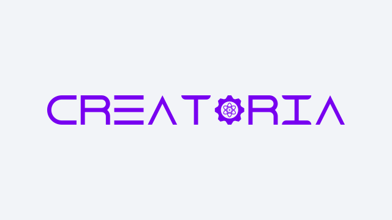

CRΞΛTØRIΛ
Brief Overview
CRΞΛTØRIΛ (ordinarily spelled "CREATORIA") is a Content Creation Platform-as-a-Service (PaaS) with fully integrated Agentic Generative Artificial Intelligence (GenAI) for the Content Creator from ALL Walks of Life.
The Areas of Focus include:

Image: Trademark of CRΞΛTØRIΛ, a Content Creation Platform-as-a-Service by JΞFØRCΞX.
Features
CRΞΛTØRIΛ provides a collection of tools and workspaces with Agentic GenAI integration that enhance the Content Creation workflow.
- Idea Factory - Collaborate with the Agentic GenAI Partner to generate new ideas for the Next Big Thing regardless of whether it is for an upcoming Novel, Film, Game, or Podcast.
- Designer Studio - Partner with the Agentic GenAI to design assets such as a Book Cover for the upcoming Novel or a Character Turnaround Reference Sheet for a blockbuster Film Project.
- Builder Space - Collaborate with the Agentic GenAI Partner to co-author the upcoming Novel or generate experimental video clips before committing real resources for the actual scenes in the Film.
- Test Laboratory - Evaluate Production Output with the Agentic GenAI Partner to Proofread the Novel's Manuscript or review the Film's readiness for Launch Day.
- Launch Pad - Partner with the Agentic GenAI to publish the new Novel or Film across specified Physical or Digital storefronts.
- Management Office - Track Intellectual Property (IP) statuses including Licensing, Counterparty, Legal Action, and Geolocation Coverage with the Agentic GenAI Partner as a Team Player for reminders and outbound communications.
Outlook
Under Consideration - Given the fluidity and rapidly changing Agentic GenAI space, the Portfolio Management Team will continue to monitor the latest development and assess the Viability of building this Product before the commencement of any development activity.
Navigation
-
 WØRLD
WØRLD
-
 TΞNGØKU
TΞNGØKU
-
 Portfolio
Portfolio
-
 Home
Home